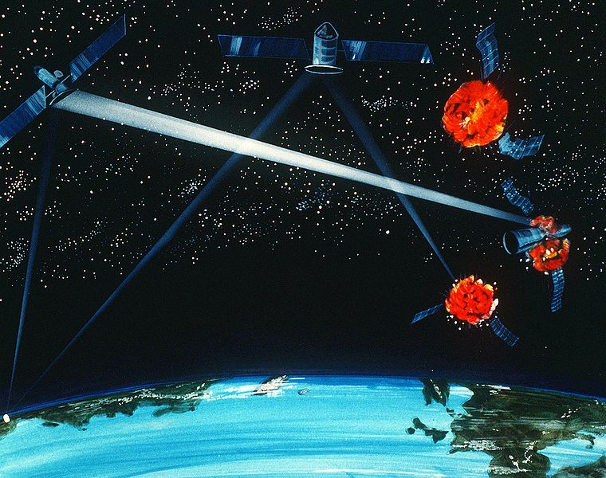
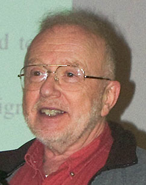

La ética de Parnas
Un post que tiene relación con la historia de Stalisnav Petrov es este otro, que escribí en 2009, y que incorporo a esta serie de artículos reciclados veraniegos:
Pregúntale a Parnas
En 1985 Ronald Reagan propone la Iniciativa de Defensa Estratégica, SDI, por sus siglas en inglés, la que llegó a ser conocida como Star Wars, en referencia a las películas de George Lucas.
Esencialmente la SDI consistía en un escudo, formado por una red de satélites de detección de lanzamiento de misiles y una serie de armas anti misilísticas, con lasers de alta energía, encargadas de destruir estos misiles en el espacio, antes de que llegaran a a territorio norteamericano (todo sobre nuestras cabezas, claro).

En ese tiempo David Lorge Parnas, importante pionero del campo de la ingeniería de software, y profesor en la Universidad de Victoria en la Columba Británica, era consultor con un acceso a secretos militares de la oficina de investigación naval en Washington. El fue uno de los nueve científicos convocados por la oficina central de SDI para participar en el “panel sobre soporte computacional en la administración de batallas”.
Parnas, en una carta de renuncia al panel, acompañada de 17 memorandos, declaraba que nunca sería posible probar en forma realista el vasto arreglo de computadores responsables de enlazar y controlar los sistemas de sensores, armas, sistemas de guías y puntería, además de las estaciones de batalla.
De acuerdo a Parnas esto era aún más dificil de lograr, siguiendo los métodos tradicionales de desarrollo de software, en que los “bugs” y errores sólo son detectados en el uso diario de los sistemas. “Creo que es nuestro deber como científicos e ingenieros, replicar que no tenemos ningún tipo de magia tecnológica que permita lograr esto. El Presidente y el público deben saber esto”, fue parte de lo que dijo.
El profesor Parnas escribió que estaba seguro que otros expertos estarían en desacuerdo con él, pero muchos verían este programa como la “olla de oro” para financiar proyectos de investigación, y otros como un interesante desafío intelectual. Por supuesto ese no es el camino ético, y Parnas lo tenía bien claro, aunque sus argumentos para defender su posición fueron estrictamente técnicos. Es por eso que Parnas se convirtió en una de las personas que yo más admiro en mi profesión.

Pueden leer su artículo “Software Aspects of Strategic Defense”, publicado en la edición de diciembre de 1985, en la CACM.
“Mis conclusiones no están basadas en juicios políticos. A diferencia de otras críticas académicas sobre el esfuerzo SDI, yo no he objetado, en el pasado, los esfuerzos de defensa, o la investigación auspiciada por la defensa. He estado profundamente envuelto en este tipo de investigaciones y he sido consultor en extensos proyectos de defensa. Mis conclusiones están basadas en más de 20 años de investigación en ingeniería de software, incluyendo más de 8 años de trabajo en software de tiempo real usado en dispositivos aereos militares. Están basadas en mi familiaridad con el software operacional militar, y la investigación en ciencias de la computación. Mis conclusiones están basadas en las características peculiares de este esfuerzo en particular, y no en el desarrollo de armamentos en general.”
El artículo contiene los memorandos que acompañan su carta de renuncia, y se divide en 8 partes:
- Las diferencias tecnológicas fundamentales entre la ingeniería de software y otras áreas de la ingeniería, y porque el software no es fiable.
- Las propiedades del software propuesto para el SDI que lo hacen inalcanzable.
- Por qué las técnicas comunmente usadas para construir el software militar son inadecuadas para este trabajo.
- La naturaleza de la investigación en ingeniería de software, y porque las mejoras en esta no pueden ser suficientes para permitir la construcción de un sistema de defensa estratégica confiable.
- Las razones por la que él no espera que la investigación en inteligencia artificial ayudará en la construcción de software militar confiable.
- Por qué él no espera que la investigación en programación automática traerá las mejoras sustanciales necesarias.
- Por qué la verificación de programas (pruebas matemáticas de correctitud) no puede ayudar a conseguir un sistema confiable de administración de batalla.
- Por qué el financiamiento de investigación militar en software y otros aspectos de las ciencias de la computación es ineficiente e ineficaz.
El artículo, o serie de artículos, es una verdadera lección de ingeniería de software.
Parnas evita el uso de jerga técnica, de modo que no es necesario ser programador para leerlo.
Pero lo más importante es que Parnas dió una importante lección de ética, porque él cree que las personas éticas deberían trabajar en proyectos que ellos piensen que tienen un aspecto no ético. De esta manera serán capaces de influenciar en mantener la ética y porque además tienen una obligación de informarse a si mismos de los riesgos y beneficios de tales proyectos1.
Su actitud lo convirtió en la primera persona en recibir el premio Norbert Wiener por Responsabilidad Social y Profesional, entregado por la CPSR Computer Professionals for Social Responsability.
Norber Wiener, el padre de la Cibernética, escribió el siguiente texto, citado por Terry Winograd, en la ceremonia de la entrega del premio a Parnas:
“Cualquier máquina construida con el propósito de tomar decisiones, si no posee el poder de aprendizaje será una mente totalmente literal. ¡Ay de notroso si dejamos que decida nuestra conducta, a menos que hayamos examinado previamente las leyes de su acción, y sepamos que su conducta se llevará a cabo de acuerdo a los principios aceptables para nosotros!
Por otro lado, la máquina, como el djinee (genio), que puede aprender y tomar decisiones en base a su aprendizaje, no estará obligada a tomar tales decisiones de la manera en que nosotros estaríamos obligados, o siquiera a tomar decisiones aceptables para nosotros. Para el hombre que no esté conciente de esto, desechar el problema de su responsabilidad sobre la máquina, ya sea que esta aprenda o no, es como tirar su responsabilidad al viento, sólo para encontrar que esta vuelve sentada en un torbellino.”2
¿El software es el genio en la botella, somos suficientemente responsables para controlarlo?
Te invito a leer aParnas.
-
Contrástese este texto de Wiener con lo expuesto por Kascinsky (el desafío del nuevo ludita) sobre dejar a las máquinas tomar sus propias decisiones. ↩︎